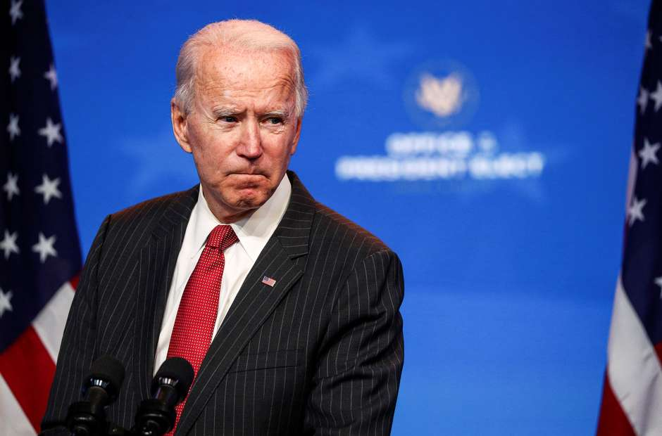

O presidente eleito dos Estados Unidos, Joe Biden, anunciou nesta segunda-feira os principais membros de sua equipe de política externa, escolhendo Antony Blinken como secretário de Estado, Jake Sullivan como conselheiro de Segurança Nacional e Linda Thomas-Greenfield como embaixadora na Organização das Nações Unidas (ONU).
O democrata Biden ainda selecionou Alejandro Mayorkas para comandar o Departamento de Segurança Interna e o ex-senador e indicado presidencial democrata John Kerry como enviado especial do presidente para o clima.
Ao promover Blinken, de 58 anos, Biden escolheu um assessor experiente e de sua confiança que arcará com a maior parte do fardo de se desmontar a política externa "A América Primeiro" do presidente Donald Trump e reconstruir as alianças dos EUA na Europa e em outras partes do mundo.
Thomas-Greenfield ocupou um cargo diplomático de alto escalão na gestão do ex-presidente Barack Obama, e Sullivan foi vice-assistente de Obama e conselheiro político sênior da equipe de campanha da candidata presidencial democrata de 2016, Hillary Clinton.

Mayorkas é um advogado cubano-norte-americano que serviu como vice-secretário de Segurança Interna de Obama.
Biden, que trabalha em Delaware, Estado no qual reside, segue adiante com seus planos de transição, apesar da falta de colaboração do governo atual.
O republicano Trump perdeu a eleição de 3 de novembro, mas não admitiu a derrota e está travando uma batalha judicial para reverter os resultados e impedir Biden de tomar posse no dia 20 de janeiro.
Fonte: https://www.terra.com.br/noticias/mundo/biden-anuncia-blinken-como-secretario-de-estado-e-molda-equipe-de-politica-externa,b8b7a83fa9a4920fc145296d9f766ee5x2q7lm13.html